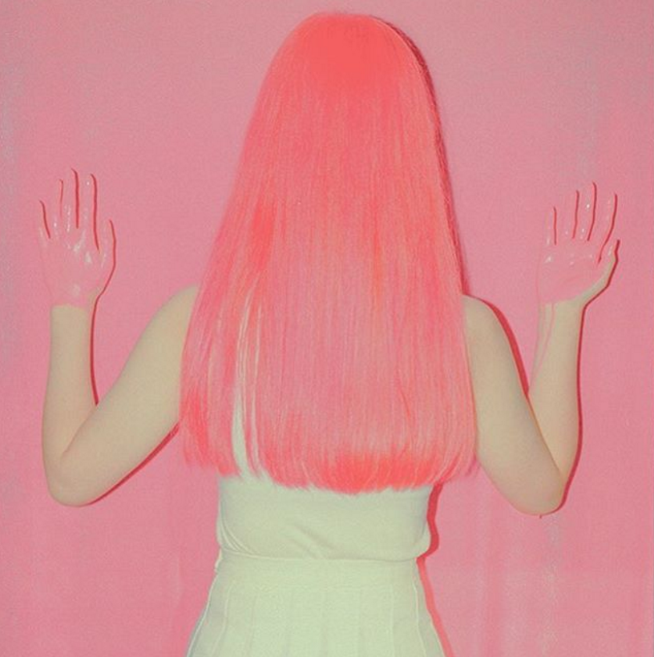
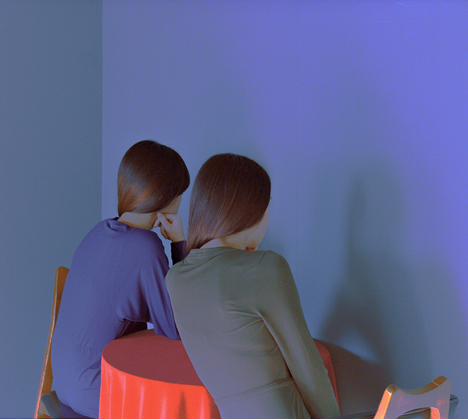
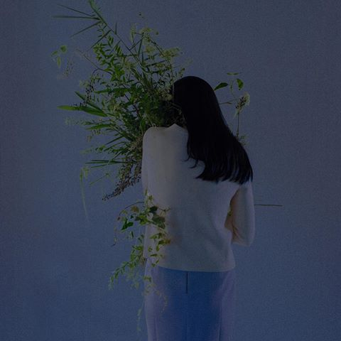

Pink is a pale red color which takes its name from the flower of the same name. According to surveys in Europe and the United States, pink is the color most often associated with charm, politeness, sensitivity, tenderness, sweetness, childhood, femininity, and the romantic. When combined with white, it is associated with innocence. When combined with violet or black, it is associated with eroticism and seduction.

Blue is the colour between violet and green on the optical spectrum of visible light. Human eyes perceive blue when observing light with a wavelength between 450 and 495 nanometres, which is between 4500 and 4950 ångströms. Blues with a higher frequency and thus a shorter wavelength gradually look more violet, while those with a lower frequency and a longer wavelength gradually appear more green. Pure blue, in the middle, has a wavelength of 470 nanometers (4700 ångströms).

Beauty and the Beast is a 2017 American musical romantic fantasy film directed by Bill Condon from a screenplay written by Stephen Chbosky and Evan Spiliotopoulos. A co-production between Walt Disney Pictures and Mandeville Films, the film is a live-action and computer animation remake of Disney's 1991 animated film of the same name, itself an adaptation of Jeanne-Marie Leprince de Beaumont's eighteenth-century fairy tale.